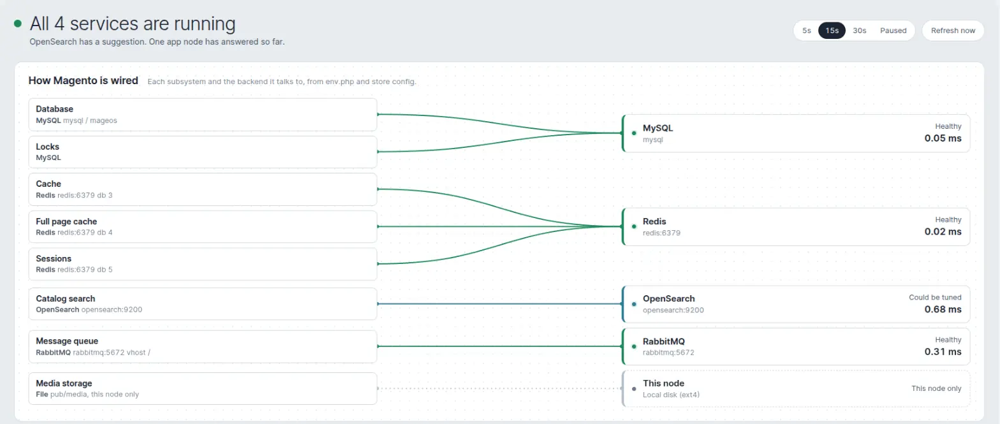

See what Magento is wired to, and how it is doing.
One admin page that draws the line from each Magento subsystem to the backend behind it, then checks MySQL, Redis, OpenSearch, RabbitMQ and every app node. Read only, nothing stored, MIT licensed.
composer require furan/magento-infra-health bin/magento setup:upgrade
- Magento 2.4 and Mage-OS
- PHP 8.0 and newer
- No database tables, no cron, no agents
The wiring board

- The left column lists each Magento subsystem and what env.php and store config point it at.
- Wires lead to one box per backend, so three Redis databases on one server share one box.
- Each backend shows its status and round-trip time as soon as its own probe returns.
- Click a backend to jump to its panel with configuration, figures, gauges and tables.
What it knows from config alone
The board reads env.php and store configuration, so it costs nothing and renders without any network call. It answers the question "which Redis is the page cache on?" without opening a file.
Database
- Writer host and schema
- Read replicas
- Adobe Commerce slave_connection
- Magentiz_SplitDb
- Furan_ReadWriteSplit
Caches and sessions
- Cache backend and database
- Full page cache or Varnish
- L2 cache
- Sessions in Redis, MySQL or files
- Lock provider
Search and queues
- OpenSearch
- Elasticsearch 7 and 8
- ElasticSuite
- RabbitMQ virtual host
- Queues running on MySQL
Storage
- Media on local disk
- Shared mounts (NFS, EFS, GlusterFS, CephFS)
- Amazon S3 remote storage
- File caches, sessions and locks
Shared or per node
File-backed subsystems are traced to their mount. A media folder on NFS, EFS, FSx, Azure Files or a FUSE bucket is shown as shared across nodes. A local disk is labelled "this node only", which is exactly what you want to know before adding a second web server.
Grouped so wires never cross
Subsystems are sorted by the backend they land on. Cache, page cache and sessions line up next to each other and converge on one Redis box.
What it checks
Six probes ship with the module. Each one runs in its own request, so a dead backend never delays the others, and each panel shows configuration on the left and figures, ring gauges and tables on the right.
MySQL
Writer and every read replica: version, role, uptime, connections against max_connections, running threads, queries per second, slow queries, schema size, row lock waits, buffer pool hit rate and replica lag. Aurora clusters list every member and its lag.
- Main connection on a read-only instance
- Connections above 80%
- Replica lag over 30 s
- Read connection reaching the writer
Redis and Valkey
One panel per server, with the databases Magento uses on it: keys, ops per second, memory, clients, evictions, fragmentation, hit ratio, eviction policy, role and attached replicas. Works with Sentinel and ACL users.
- Magento writes to a read-only replica
- Cluster mode enabled
- Memory above 90%
- Evictions with noeviction
- Reads not offloaded to the replica
OpenSearch and Elasticsearch
Cluster health, nodes, documents, store size, lifetime and live query and indexing latency, shard placement, JVM heap on the busiest node, and a table of the indices under Magento's prefix. ElasticSuite's server list is tried in order.
- Cluster red
- Cluster yellow with several nodes
- A listed server unreachable
- Single node, so yellow is expected
RabbitMQ
Broker version, cluster name, connections, publish and deliver rates, and every queue with ready, unacked, consumers and in and out rates. Reads the management API, and falls back to passive declares over AMQP when it is not reachable.
- AMQP port unreachable
- 1,000 or more messages waiting
- A backlog with no consumer
MySQL queue
For queues that run on Magento_MysqlMq, with or without RabbitMQ alongside: waiting, in progress, retry and failed counts per queue, sorted by backlog.
- 1,000 or more waiting
- Messages in retry or error
App node
Whichever node answered the request: hostname, platform, OS, PHP and SAPI, Magento mode, memory limits, host load, CPU cores and cgroup CPU and memory limits in a container, plus OPcache hit rate, memory, keys and JIT.
- OPcache disabled or full
- Container memory above 90%


![The RabbitMQ panel: RabbitMQ 3.10.20 on Erlang 25.3 with a 0.23 ms round trip. Configuration lists the AMQP endpoint, virtual host, user, TLS, management API URL, version, cluster and a backlog without consumers of 2 queues. Tiles show 24 queues, 6 ready, unacked, consumers, publish and deliver rates and connections. A table of queues in vhost / highlights two rows in amber: media.storage.catalog.image.resize with 4 ready and inventory.reservations.updateSalabilityStatus with 2 ready, both with no consumers.](assets/rabbitmq.webp)
Live, with nothing on the server
The page polls every 5, 15 or 30 seconds, or stays paused. History and rates live in the browser tab, so the module needs no table, cron job or agent.
- One request per probe. Panels fill in as each backend answers. The admin session lock is released first, so the requests really run in parallel.
- Sparklines for the last 40 polls on every figure and on each backend's round-trip time.
- Rates worked out in the page. Probes return monotonic counters, and the browser turns the difference between polls into queries per second, hit ratio now and query latency now.
- Every node behind the load balancer. Each poll lands on whichever node answers. Nodes are listed as they are seen, with their own panel, and marked stale when one stops answering.
- Pauses when hidden. Polling stops in a background tab and resumes with a fresh round when you come back. An expired admin session is reported instead of silently failing.
- Clear words, not codes. Headlines read "All 4 services are healthy", "OpenSearch needs attention" or "Redis is unreachable".
| Status | Means |
|---|---|
| Healthy | Reachable and nothing to report. |
| Could be tuned | Working fine, with a suggestion worth knowing about. Never changes the headline to an alert. |
| Degraded | Reachable, but a threshold is crossed: a backlog, memory, connections, lag or a yellow cluster. |
| Unreachable | The probe could not connect, or the configuration cannot work, such as writing to a replica. |
| Not used | Nothing is configured for this backend, so it is listed quietly at the bottom. |
Knows your hosting
A hostname says a lot. The probes recognise managed endpoints and container platforms, and use that to explain what they find in your terms.
MySQL endpoints
- Aurora cluster (writer)
- Aurora reader
- Aurora custom
- Aurora instance
- RDS instance
- RDS Proxy
- Azure Database for MySQL
- DigitalOcean
- MariaDB
Redis endpoints
- ElastiCache primary
- ElastiCache reader
- ElastiCache cluster config
- ElastiCache Serverless
- MemoryDB
- Azure Cache for Redis
- DigitalOcean
- Unix socket
- Valkey
Platforms
- AWS ECS on Fargate
- AWS ECS
- Kubernetes
- Azure App Service
- Docker and containerd
- Linux host or VM
Shared storage
- NFS
- Amazon EFS
- Amazon FSx
- Azure Files
- SMB/CIFS
- GlusterFS
- CephFS
- S3 via s3fs, goofys or Mountpoint
- JuiceFS
- virtiofs and 9p
Catches the quiet misconfigurations
The main connection pointing at an Aurora reader after a failover. Cache writes going to an ElastiCache reader endpoint. A Redis replication group with cluster mode on, which Magento's client cannot follow. A read connection that reaches the writer, so nothing is offloaded. Each is reported with the fix in one sentence.
Honest inside a container
Load and core count are labelled as the host's, and the memory figure is the cgroup's, with the reclaimable page cache taken out, against the container limit. Works with cgroup v1 and v2.
From the terminal
The same probes run from the command line, which is handy on one specific node or from a monitoring script. The exit code is 1 when anything is unreachable.
$ bin/magento infrahealth:status OK App node app-1 PHP 8.4.27 (cli) OK MySQL mysql 0.53 ms MySQL 8.0.46, writer, up 12d 2h OK Redis redis:6379 0.06 ms v6.2.24 master, up 12d TIP OpenSearch opensearch:9200 0.51 ms opensearch 2.19.2, cluster yellow, 1 node tip: This is a single-node cluster, so 4 replica shards can't be placed and the cluster reports yellow. Searches are unaffected. Setting number_of_replicas to 0 on these indices would turn it green, or add a second node if you want redundancy. OK RabbitMQ rabbitmq:5672 0.24 ms RabbitMQ 3.10.20 on Erlang 25.3 OK MySQL queue queue_message 1.8 ms 3 queues on MySQL node app-1 · 216.8 ms $ bin/magento infrahealth:status --json | jq '.services[] | {label, status, latency_ms}'
Plain text
One line per backend, with the suggestions underneath.
JSON
The full snapshot: node, wiring, and every service's configuration, stats, gauges, tables and tips. The same shape the admin page consumes.
Exit code
0 when everything is reachable, 1 when anything is down, so it drops into a health check or a deployment gate as it is.
Extend
Add a probe for Varnish, a CDN or your own service from a module of yours. Implement one interface, register it in di.xml, and it gets a box on the board, a panel, sparklines and a line in the CLI.
Probes
Implement ProbeInterface and return one result per instance. Add configuration lines, stats, ring gauges, tables with row highlights, tips and counters for live rates. A probe that throws is shown as unreachable, never a broken page.
Wiring rows
Implement WiringProviderInterface to add rows to the board, linked to your probe or standing alone. Providers run on page render, so they read configuration only.
<type name="Furan\InfraHealth\Model\ProbeRunner">
<arguments>
<argument name="probes" xsi:type="array">
<item name="varnish" xsi:type="object">Vendor\Module\Model\VarnishProbe</item>
</argument>
</arguments>
</type>
public function run(): array
{
$result = new ProbeResult('varnish', 'Varnish', 'varnish:6081');
$result->addStat('objects', 'Objects', $objects);
$result->addGauge('Hit ratio', $hitRatio, '', true);
return [$result];
}
Read-only by design
A health page should never be the thing that hurts production. Every probe is bounded, read only and careful with secrets.
Only reads
MySQL runs SELECT and SHOW. Redis runs PING and INFO, never KEYS or SCAN. Search uses GET on health, node stats and the index list, and no test document is ever written. RabbitMQ uses the management API or passive declares, which never create a queue.
Hard timeouts
HTTP connects in 1 second and finishes in 2.5 with an 8 MB cap. Redis has 1.5 seconds, MySQL readers 2, and the AMQP fallback stops after 3 seconds of declares. A dead backend cannot pin a PHP-FPM worker.
No secrets on screen
Passwords never leave the server. Configuration shows "password set" or "ACL user set", and any user:password embedded in a URL or mount source is stripped before it is displayed or logged.
Nothing stored
No database tables, no files, no cron. History, sparklines and rates exist only in the open browser tab and are gone when it closes.
Locked down
Its own ACL resource under System > Tools. The stats endpoint accepts only a probe code from the registered pool, so it cannot be pointed at another host, and responses are sent with no-store.
Safe rendering
The page builds its DOM with text nodes only. Nothing a backend returns is ever inserted as HTML.
Good to know
- RabbitMQ rates need the management APIPort 15672 is tried by default, or 15671 with TLS. Set
infra_health/rabbitmq_management_urlin env.php when it lives elsewhere. Without it, queue depths and consumers still come over AMQP. - Replica lag needs a privilegeClassic MySQL and RDS replicas report lag through SHOW REPLICA STATUS, which needs REPLICATION CLIENT. Without it, lag is simply not shown. Aurora needs nothing extra.
- Managed search clusters may deny some readsCluster health, the index list and node stats are each optional. Anything refused is listed under "Not readable" and the rest of the panel still works.
- The App node panel is whichever node answeredBehind a load balancer you will see nodes appear over several polls. The CLI command is the way to look at one specific node.
Install
On an existing store. The page is under System > Tools > Infrastructure Health once it is installed, and the CLI command is available straight away.
composer require furan/magento-infra-health
bin/magento module:enable Furan_InfraHealth
bin/magento setup:upgrade
# production mode only
bin/magento setup:di:compile
bin/magento setup:static-content:deploy
- Requires
- Magento 2.4 or Mage-OS, and PHP 8.0 or later. Nothing else: no tables, no cron group, no queue consumers.
- Optional
- The RabbitMQ management plugin for queue rates. Magento_MysqlMq for the MySQL queue panel.
- Configuration
- One optional key in env.php,
infra_health/rabbitmq_management_url, when the management API is not on the broker host.